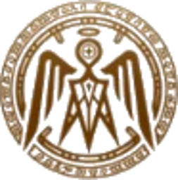

搜尋結果查看資料
驗證 KETHER Discord 身分
使用 Discord 登入◆
KETHER DATABASE CORE
KETHER資訊
- 戰甲檔案館已拆分為「一般戰甲」與「Prime 戰甲」兩座獨立頁面。
- 一般戰甲收錄 60 位，提供定位分類、圖片、故事與遊戲內入手條件。
- Prime 戰甲獨立顯示白金價格、交易連結與個人持有資料。
- 故事書主線與支線皆採任務專屬封面，不再共用戰甲圖片。
- 資料價格每日 04:00 同步；若顯示異常，請重新整理或確認最新部署。

驗證 KETHER Discord 身分
使用 Discord 登入